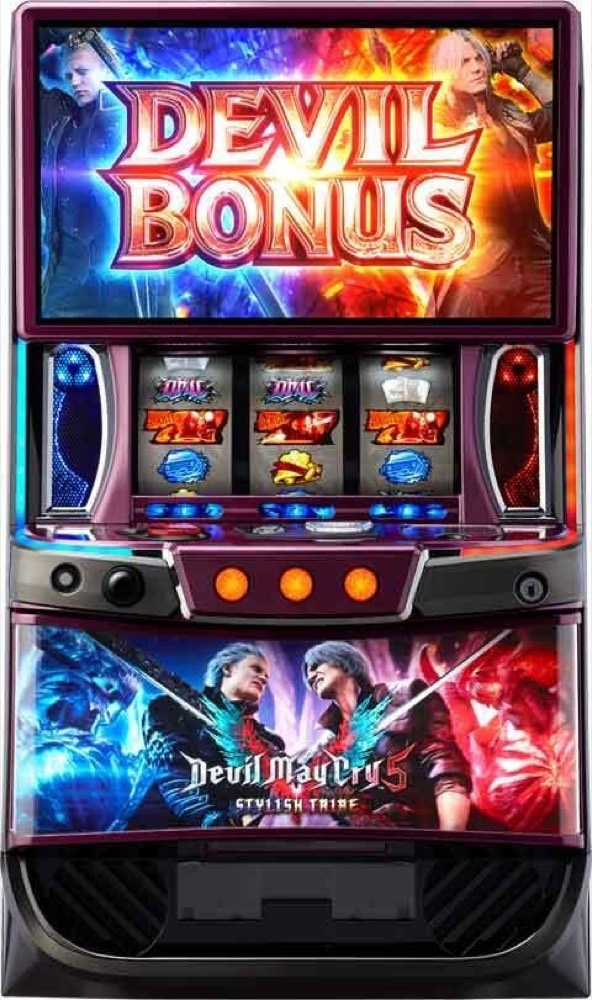

スマスロ デビル メイ クライ5 スタイリッシュトライブ
初当りBONUSから24G＋α＋3GのSTへ。500枚到達後のURIZEN BATTLEと約89%の上位STを専用進行で体験。
- 導入
- 2025年6月
- メーカー
- アデリオン
- 分類
- パチスロ
主要スペック
3種類のCZ、EPISODE BONUS／DMC BONUS、前半24G＋α＋後半3GのSTYLISH TIME、150〜300枚のSTYLISH BONUS、平均約560枚のJUDGEMENT CUT BONUS、100GのURIZEN BATTLE、約89%でDEVIL BONUSがループするDevils Never Cryまでを機種専用画面で再現します。
- 通常STは24G＋α＋後半3G・継続約65%
- EPISODE BONUSとDMC BONUSは1:1
- 500枚獲得後のBONUSでURIZEN BATTLE
- 上位STはDEVIL BONUSが約89%ループ
スマスロ デビル メイ クライ5 スタイリッシュトライブの見どころと計算条件
3種類のCZ、EPISODE BONUS／DMC BONUS、前半24G＋α＋後半3GのSTYLISH TIME、150〜300枚のSTYLISH BONUS、平均約560枚のJUDGEMENT CUT BONUS、100GのURIZEN BATTLE、約89%でDEVIL BONUSがループするDevils Never Cryまでを機種専用画面で再現します。
スマスロ DMC5を数字で早分かり
初当りBONUSからSTYLISH TIME、Devils Never Cryまでの流れと、設定ごとの結果差を固定レートで比較できます。
30秒で分かるスマスロ DMC5
初当りBONUSの種類でST突入期待度が変わり、27GのSTでBONUSを重ね、500枚到達後の強化バトルから約89%の上位を目指すBONUS＋ST型です。
こんな遊び方に向いている
- 24G＋後半3Gを回して最終PUSHを押したい
- 150〜300枚／250枚／平均560枚のBONUSを開きたい
- URIZEN BATTLEから強ST・上位STを狙いたい
遊ぶ前に確認したいこと
- BONUS・ST初当り、主要ゲーム数、純増、公開期待度は解析値
- ST中BONUSと上位DEVIL BONUSを別表示
- 未公表の細かな振り分けは体験用代表値
3種類のCZと2種類の初当りBONUS
通常時はポイントからNERO、V、DANTEの3種類のCZを抽選します。NEROは狙え3回保障・成功約40%、Vは5G＋α・成功約41%、DANTEは9G・成功約70%で、成功時はEPISODE BONUS濃厚です。
初当りBONUSはEPISODE BONUSとDMC BONUSが1:1。EPISODEは20G・純増約5.8枚/GでST濃厚、DMC BONUSは15G＋α・純増約3.8枚/Gで、BLOODY BATTLE勝利などから約20%でSTへ進みます。
STYLISH TIMEと3種類のST中BONUS
通常STは前半24G＋αと後半3Gで構成され、継続期待度は約65%。前半はエンブレム点灯とチャンス目、後半3Gは64%以上の期待度でBONUSを狙います。
STYLISH BONUSは150・200・250・300枚。EPISODE BONUS-閻魔刀-は250枚。JUDGEMENT CUT BONUSは平均約560枚で、上乗せパート中は約1/3.5で枚数上乗せを抽選します。専用画面ではSTを最後まで回してからPUSHし、BONUS種類と枚数を開きます。
URIZEN BATTLEと強ST
同一ST内で500枚以上獲得した後の最初のBONUSは、100GのURIZEN BATTLEへ。平均約740ORBを減算し、残りORBが0ならEPISODE BONUSと上位STです。
上位STへのトータル期待度は約24%。敗北時も残りORBに応じて次回ST平均継続率が約75〜86%へ上がる強STとなります。専用画面では100Gを進め、最終PUSHで上位または強STを表示します。
Devils Never CryとDEVIL BONUS
上位STは前半24G＋α＋後半3Gで、平均約400枚のDEVIL BONUSが約89%でシームレスにループします。獲得期待枚数はSTYLISH TIME突入から一連の増加区間終了まで平均約3400枚です。
DEVIL BONUSは15G＋α・純増約5.8枚/G。バージルJACは50枚、ダンテJACは100枚以上で、最大上乗せは1000枚です。専用画面では各上位STを27G進め、PUSH後にBONUS枚数を表示します。
固定条件と簡略化する範囲
- 約33.7G/50枚・1,000円46枚貸し・5.2枚交換で固定
- 設定1〜6のBONUS・ST初当りと出玉率は公開設定別値
- 初当りBONUS、通常ST、ST中BONUS、URIZEN BATTLE、強ST、上位STを専用進行
- CZ選択率、BONUS種類振り分け、ORB獲得量など未公表部分は体験用代表値
- 19,000枚到達時はコンプリート表示
平均Gと投資目安の計算
掲載するSTYLISH TIME初当り約1/445.4は設定1基準です。当サイトでは50枚あたり33.7G、1,000円46枚貸しの固定条件から、設定1基準の平均投資目安を約14,400円と計算します。
シミュレーターでは設定1〜6を均等抽選します。設定1〜6で公開されている初当り値を個別に使います。公開されていない特化ゾーン・上位到達率の設定差は加えません。 換金は5.2枚交換で固定し、結果とランキングに設定を表示します。
シミュレーション結果の見方
当るまで初当りBONUS・STYLISH TIMEまでのゲーム数
設定設定1・2・3・4・5・6から抽選された今回の設定
上位到達URIZEN BATTLEとDevils Never Cryへの到達
最終収支差枚と5.2枚交換の収支目安
結果は自動で「マイ記録」に保存され、同じ機種を何回試したか、最高収支、勝率をあとから確認できます。
簡易シミュレーターについて
初当りBONUS・STYLISH TIME・Devils Never Cryの流れを固定条件で体験できます。JavaScriptを有効にすると、この位置にシミュレーター、演出、マイ記録、機種別ランキングが表示されます。
結果は娯楽・確率理解のための参考表示です。金銭的価値や交換価値はなく、実際の勝敗や収支を保証しません。18歳未満の方の利用はお控えください。
スマスロ DMC5のよくある質問
スマスロ DMC5はどんな台？
3種類のCZ、EPISODE BONUS／DMC BONUS、前半24G＋α＋後半3GのSTYLISH TIME、150〜300枚のSTYLISH BONUS、平均約560枚のJUDGEMENT CUT BONUS、100GのURIZEN BATTLE、約89%でDEVIL BONUSがループするDevils Never Cryまでを機種専用画面で再現します。 通常STは24G＋α＋後半3G・継続約65%が主な確認ポイントです。
スマスロ DMC5の平均投資目安は？
設定1基準のSTYLISH TIME初当り約1/445.4と、50枚あたり33.7G・46枚貸しの固定条件から、平均14,400円を目安として表示します。実際の設定や遊技状況で結果は変わります。
設定とゲームの流れはどう抽選する？
開始時に設定1・2・3・4・5・6から1つを均等抽選し、初当りBONUS、STYLISH TIME、URIZEN BATTLE、Devils Never Cryの順で到達を判定します。設定は最終結果とランキングに表示します。
収支はどう計算する？
1,000円46枚貸し・5.2枚交換の固定条件で投資、換金、収支目安を計算します。実店舗の再プレイ、持ちメダル、端数処理は含みません。